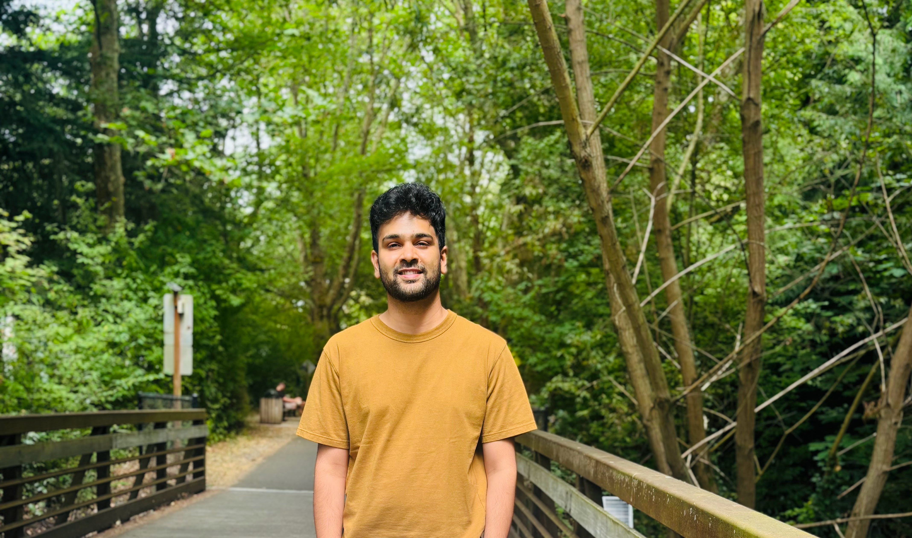

2013 – 2015
M.S. in Computer Information Systems
Colorado State University, Fort Collins, CO

I am a researcher and program manager working at the intersection of AI and healthcare. My research focuses on medical AI diagnostics, privacy-preserving healthcare systems, and federated learning for clinical applications, with additional interests in cloud security, explainable AI, and graph neural networks. I have 48 peer-reviewed publications (379 citations, h-index: 13) and serve as Associate Editor for IEEE Internet of Things Journal and npj Digital Medicine.
In industry, I have led large-scale technical programs at Expedia Group and Microsoft, managing initiatives that delivered over $192M in combined revenue impact and cost savings.
Download CVAssociate Editor
Program Committee Member
Peer Reviewer (120+ reviews)